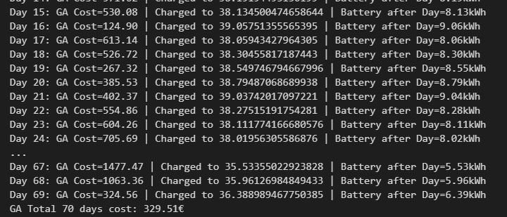
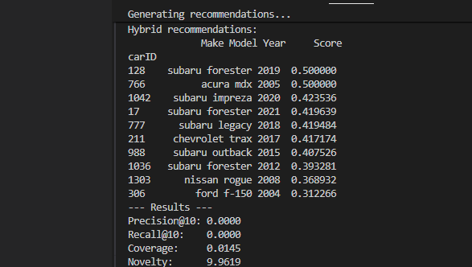
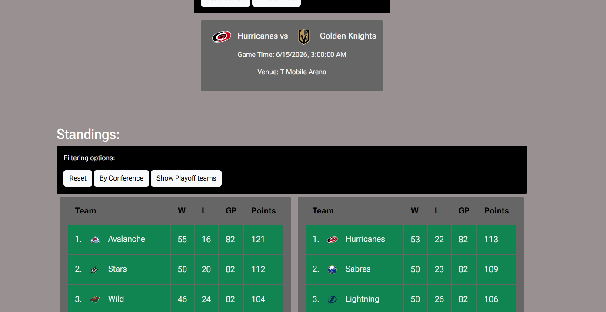
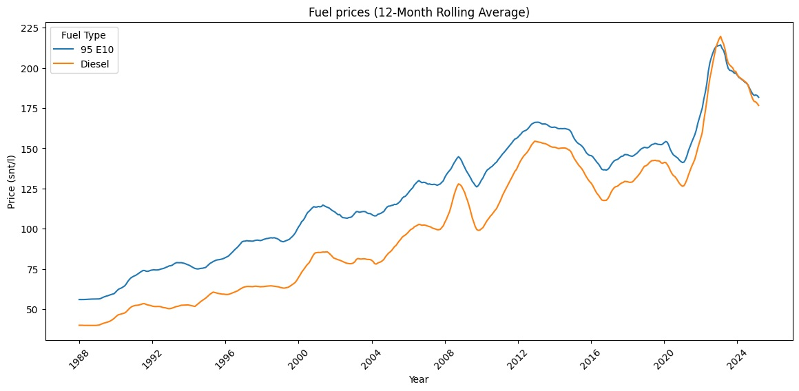
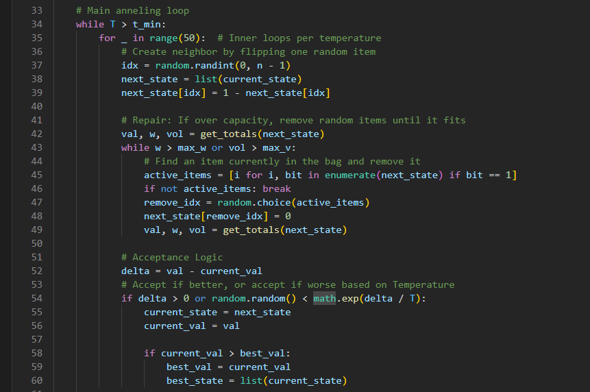
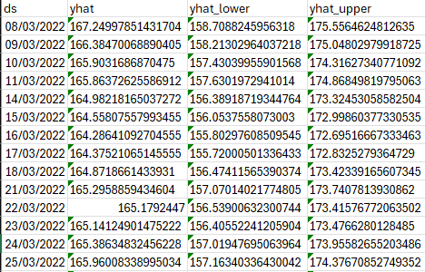
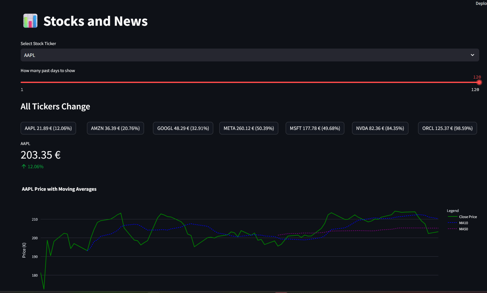
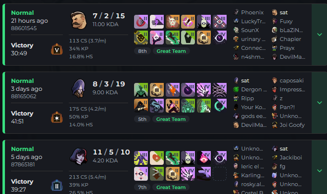
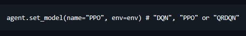
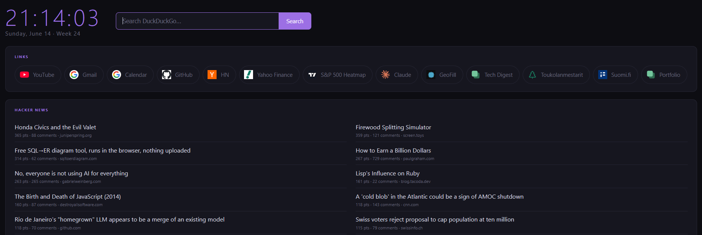

Everything I've built
Live demos you can open and try right now,
plus the rest of the code
Running now
 app
app
 game
game
 site
site

More projects
More repos — code only, no live demos yet.

GDP Data Pipeline
Merges two Kaggle datasets into a 66-year, 196-country time series to explore growth, inequality, and economic shocks.

Smart Charge
Schedules overnight EV charging to cut electricity costs — a genetic algorithm working against real hourly price data.

Car Hybrid Recommender
A hybrid recommender system for used cars — collaborative and content-based filtering combined with linear weighting, built on merged car listing and ratings datasets.


Finnish Fuel Price EDA
Cleans and visualizes Finnish gas price data from 1988 to 2025, looking for long-term trends.

Knapsack Algorithms Comparison
The knapsack problem solved five different ways, with an analysis and report comparing how each technique performs.

Stockdata Analytical System
An end-to-end pipeline for stock data: get the data, process it, analyze and predict, then visualize the results.

Streamlit FinData Explorer
A Streamlit app for exploring stock market data with dynamic, in-browser visualizations.

Tracklock Scraper
Scrapes player data for the game Deadlock from the Tracklock website. Currently broken.

Atari Assault RL
A reinforcement learning agent trained to solve the Gymnasium Atari Assault environment.

Browser Startpage
A personal browser start page with quick-access hotlinks and a news widget.